OH Referrals sent from the Referral Portal, or from another chamber linked to yours in a Referral Network, generate an Incoming OH Referral work item that Meddbase users in your chamber can pick up and process accordingly.
The prerequisite of this process is adding and configuring the Incoming OH Referral Work Type to the chamber setup.
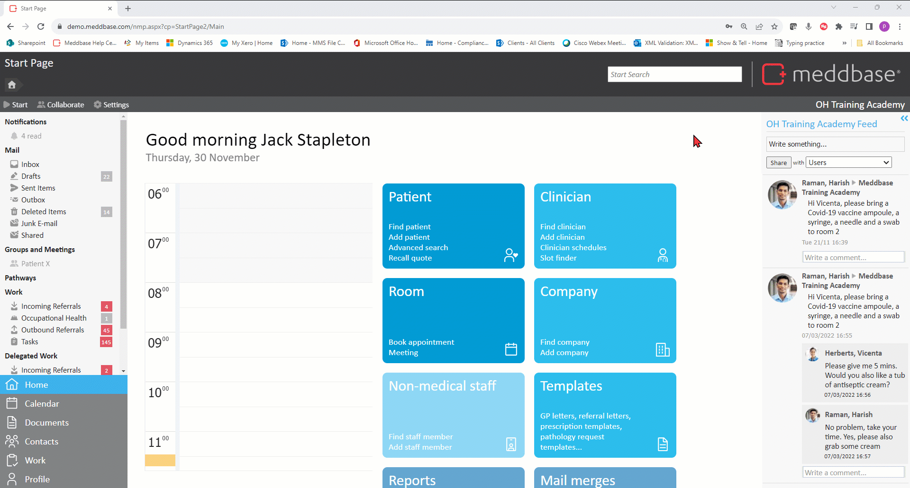
What is the purpose of the article?
This article will walk you through the process of adding and configuring the Incoming OH Referral Work Type and the available options influencing the default behaviour of an Incoming OH Referral Work Item in Meddbase.
Default behaviours of an Incoming OH Referral Work Item can be overridden on a 'per employer' basis, meaning the work item can behave differently when the referral is sent by a given employer. Refer to Initial Setup Part 1 for more details.
Adding the Incoming OH Referral Work Type
To add the Incoming OH Referral Work Type to the Meddbase setup:
From the Start Page navigate to Admin > Work.
Click New Work Type and select Incoming OH Referral.
Changes made in this part of the system are saved automatically.
Configuration and default behaviour of the Incoming OH Referral Work Type
Once added to the setup, the Incoming OH Referral Work Type offers a variety of configuration options influencing the behaviour of Incoming OH Referral Work Items in Meddbase.
Defaults
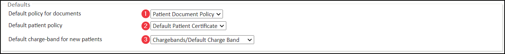
Default policy for documents - The Document Policy which will be used by default for any document added by a Referral Portal User.
Default patient policy - The Patient Policy which will be applied by default to any patient created via the Referral Portal.
Default charge band for new patients - The Self-Pay Charge band which all patients created via the Referral Portal will be assigned to by default. This is chosen from the Chamber Company's charge bands.
Workflow
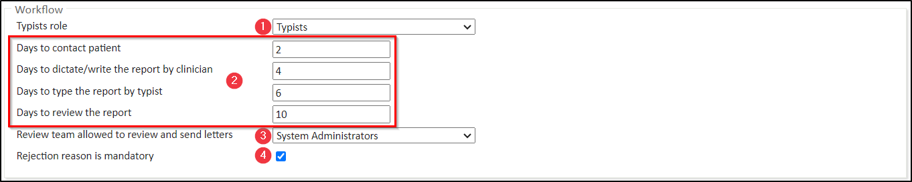
Typists role - If the Medical Person dictates notes for the OH report following discharging an appointment, a Role Group these notes will be assigned to can be selected here.
Days to... - Determine the timeline* for the Meddbase user to take action at subsequent stages of dealing with the OH Referral.
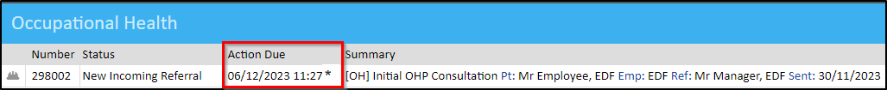
*Review team allowed to review and send letters - (Optional) If a user group should be responsible for reviewing OH reports before they are sent to the Patient/Employer, assign them using this dropdown. Note that you can leave this setting blank.
Rejection reason is mandatory - If a Meddbase user wants to reject a referral, providing reasons for this action can be mandated here.
Occupational Health (OH)
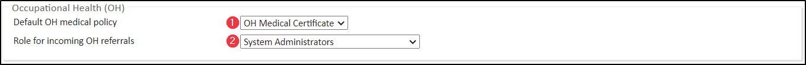
Default OH medical policy - Which Medical Policy should be used to record OH information. Referral Portal users will only be able to see Documents etc. which are created under this policy.
Role for Incoming OH referrals - Select the Role Group that will receive the Incoming OH Referral Work Items in their Work inbox.
Patient Review of the Report
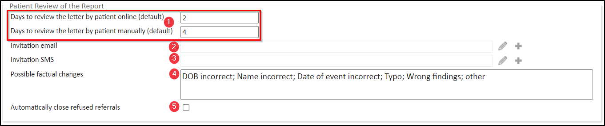
Days to... - Define the amount of time the patient has to review the OH Report before automatic release to their employer, when reviewing either online or via a letter.
Invitation email (template selection field) - This field allows selecting the email template that will generate and email inviting the patient to review the report after a Meddbase user clicked 'Send for patient review' on the Incoming OH Referral Work Item.
Invitation SMS (template selection field) - This field allows selecting the SMS template that will generate and SMS inviting the patient to review the report after a Meddbase user clicked 'Send for patient review' on the Incoming OH Referral Work Item.
Possible factual changes - The options listed here will be available for the patient during the review of the OH report, should factual changes to the report be required.
Automatically close refused referrals - This checkbox when ticked results in automatically archiving rejected referrals.
Patient invitation to see the Report
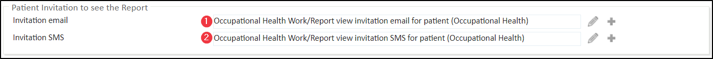
Invitation email (template selection field) - This field allows selecting the email template that will generate and email inviting the patient to view the report if the Patient Review step had been skipped for an OH Referral and the report was automatically released to the patient's manager.
Invitation SMS (template selection field) - This field allows selecting the SMS template that will generate and SMS inviting the patient to view the report if the Patient Review step had been skipped for an OH Referral and the report was automatically released to the patient's manager.
Manager Review of the Report
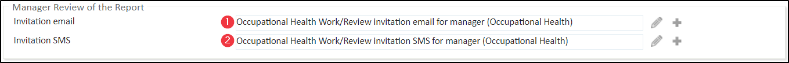
Invitation email (template selection field) - Configure the subject line and body of the email inviting the Manager to review the report after it had been released (automatically or authorised by patient). Again, Template Codes can be used here.
Invitation SMS (template selection field) - Configure the content of an SMS message inviting the Manager to review the report.
Templates
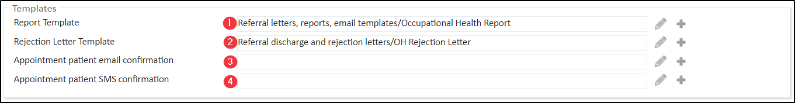
Report Template - Select the template to generate the OH Report - used automatically post appointment during the report writing process.
Rejection Letter Template - Select the template to generate the OH rejection Letter - used automatically when providing details/reasons for referral rejection.
Appointment patient email confirmation - When the Accept Referral for Export to 3rd Party System button is clicked on an Incoming OH Referral Work Item, the user has the option to record the appointment in Meddbase, even though it was booked in another system.
The user also has an option to send an appointment confirmation email to the patient by using the 'You can send a confirmation to the patient by email or a text message' option in the Work Item. This email will be generated by the template selected here.
Appointment patient SMS confirmation - When the Accept Referral for Export to 3rd Party System button is clicked on an Incoming OH Referral Work Item, the user has the option to record the appointment in Meddbase, even though it was booked in another system.
The user also has an option to manually send an appointment confirmation SMS to the patient by using the 'You can send a confirmation to the patient by email or a text message' option in the Work Item. This SMS will be generated by the template selected here.
Report Default Texts
This section allows predefining parts of the report for different referral outcomes, i.e. Appointment Discharged, Appointment Cancelled, Appointment DNA or Referral Rejected:
Appointment Discharged - Predefine the subject line and detail section for the Write Report page.
Config:
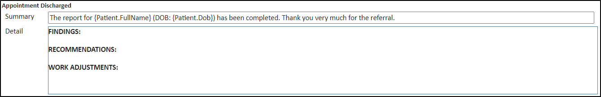
Effect:
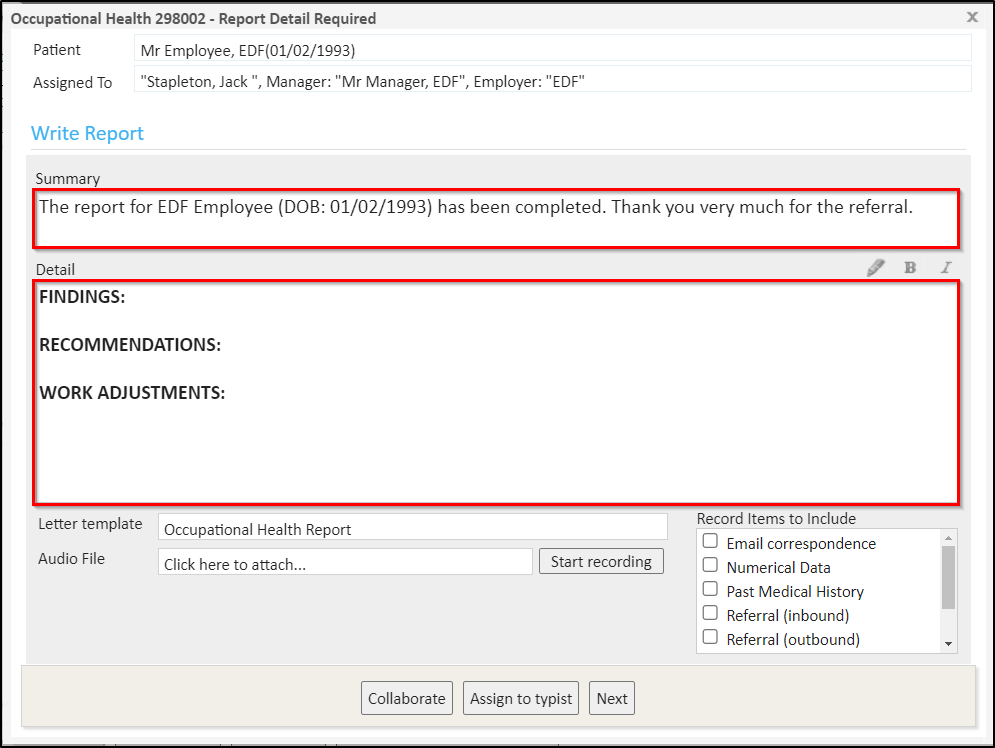
2. Appointment Cancelled/DNA/Rejected - For Appointment Cancelled, Appointment DNA or Referral Rejected outcomes, the reasons for the respective outcome can be added as separate lines.